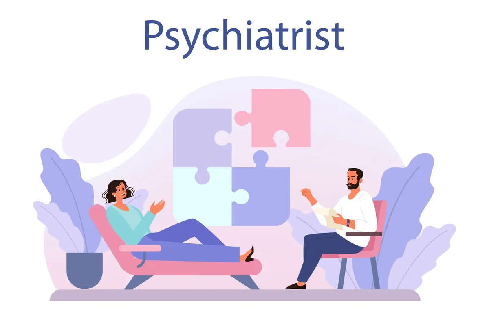

Today, as the society progresses, we accumulate a lot of stressors in many ways. As a part of the community, we as mental health practitioners understand the kind of issues that are looming
around. Even after providing resources, awareness and support in multiple ways, we may always lag behind.
Why so?
This is because individuals stay confused, ignorant and stigmatised when it comes to their mental health. To tackle this, Dr. Gorav Gupta offers his insights, ideas and consultations in every manner possible. Still, many of us may have a question that can baffle anyone-
Whom should I visit for my problem? A psychiatrist or psychologist? Which one is better for me and my mental health issues?
Coming to this, as experts we draw from our insights and explore the level of info we can give out to raise awareness. This goes for all our readers, information seekers as well as potential clients looking out for help. Keeping this in mind, as the best psychiatrist in Delhi, Dr. Gorav Gupta lays his expertise down for us to consider and think on.
With this blog, we explore what role a psychologist and psychiatrist play in a mental health journey.

What does a psychiatrist do?
For those residing in Delhi, this section is a must read. If you are looking for a good psychiatrist in Delhi, this is your chance to understand the role of a psychiatrist.
A psychiatrist is someone who pursues their basic education in the medical field, switching to psychological issues in their higher studies. Since they have a background in medicine, psychiatrists can prescribe medications, conduct medical evaluations, and provide psychotherapy when necessary.
Their role can be summarised as follows-
- Diagnoses and treats severe mental health conditions that develop as a result of several interactive factors.
- Prescribe medical interventions like antidepressants, mood stabilizers, and antipsychotics.
- Perform medical and neurological examinations to rule out physical causes of mental health symptoms and provide a holistic examination.
- Provides therapy sessions, though this is less common than medication management. Along with this, they can also conduct holistic therapy sessions that ensure overall wellbeing.
A well-known name in the field, Dr. Gorav Gupta is a good psychiatrist in Delhi that can be your go to in case of seeking consultations and emergency services.
What does a psychologist do?
Unlike a psychiatrist, a psychologist focuses more on the psychological root of the problem and aims to resolve it through therapeutic techniques. It is a great help for individuals to cope with mental health issues. Since they do not have a background in medicine, psychologists cannot prescribe medicines. Working with the top psychiatrist in Delhi, Tulasi Healthcare houses a team of wondrous psychologists working 24/7.
Their role can be summarised as follows-
- Provides psychotherapy (talk therapy) to tackle and resolve conditions like anxiety, depression, PTSD and many more psychological disorders.
- Conduct in-depth psychological assessments and tests to diagnose & draw treatment plans for various mental health conditions.
- Use therapeutic approaches like cognitive-behavioral therapy (CBT), psychoanalysis, and other therapies to resolve mental health conditions.
- Help individuals with personal development, emotional regulation, and stress management.
When to see a psychiatrist?
There can be different conditions in which one can approach a psychiatrist, given the seriousness and the factors that are affecting that individual. From the perspective of a top psychiatrist in Delhi, these are some factors to consider-
- Experience severe depression, suicidal thoughts, or psychotic symptoms.
- Have bipolar disorder, schizophrenia, or severe anxiety that requires medication.
- Need medication management for a diagnosed mental health disorder.
- Have symptoms that are affecting your ability to function daily.
If you’re in Delhi and searching for a reliable psychiatrist, Dr. Gorav Gupta, psychiatrist, is one of the top professionals.
When to see a psychologist?
A psychologist has a little varied role, but usually works on the deep seated issues of the mind. Based upon your problems, you can consider seeing a psychologist if you-
- Need therapy for anxiety, depression, stress, or relationship issues.
- Prefer talk therapy over medication.
- Are looking for coping strategies and emotional support.
- Want to work through childhood trauma or past experiences.
Which one should I choose?
Choosing the best for you comes with the problem that you are facing. You can approach either, since both professionals work in synergy with each other to draw the best treatment plan. At Tulasi Healthcare, Dr. Gorav Gupta is aided by a team of professionals. This team includes clinical psychologists, therapists, nurses and many other mental health practitioners. This setup allows them to build a holistic and well-thought treatment plan for anyone who seeks help.
How to check the right fit?
- Credentials and Qualifications:Make sure that the professional you are consulting holds a proper license to practice. They should possess necessary qualifications to be considered as a part of the fraternity.
- Specialization: Understand their specialization and if it aligns with the issue you face. For example, you approach a problem of anxiety to a geriatric psychologist, who may not be able to help you much.
- Treatment Approach: Consider whether you need medication, therapy, or a combination of both.
- Location and Accessibility: If you’re searching for a psychiatrist in Delhi, look for someone with a convenient location and flexible appointment options.Dr. Gorav Gupta is a wonderful and reliable professional to consult.
- Patient Reviews: Reading testimonials and reviews can help you measure the effectiveness and approachability of a mental health professional.
The importance of seeking help- Talk to the best psychiatrist in Delhi today.
When it comes to mental health, every minute and second counts. The mind is a web of issues and at some point, it takes a toll. Understanding the difference between a psychiatrist and a psychologist is crucial when seeking mental health treatment. Both professionals have their unique roles and can help individuals in different ways. Whether you need medication, therapy, or both, choosing the right professional is the first step toward better mental health.
If you’re searching for the best psychiatrist in Delhi, Dr. Gorav Gupta is a well-known name in the field. With his experience and expertise, you can receive the best possible care for your mental health needs.